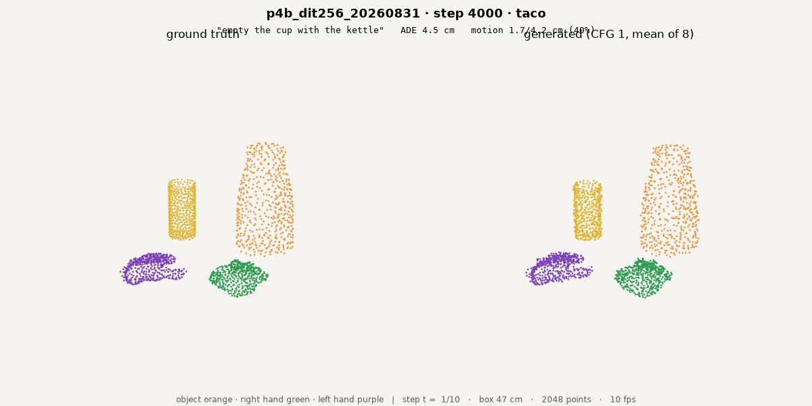
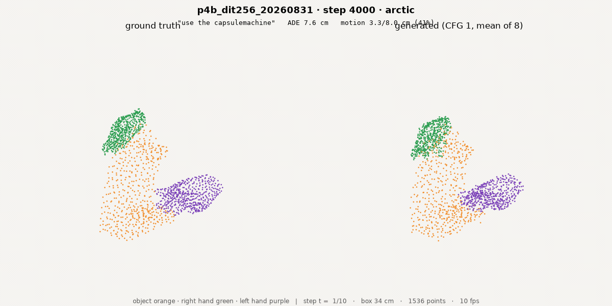
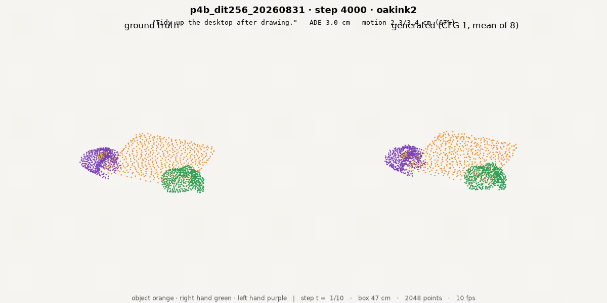

Scale-up · same chunks, both model sizes
Top row 6.09 epochs, bottom row 1.77 — read epochs, not steps.

"empty the cup with the kettle" · ADE 2.71 cm · motion 2.8 vs GT 4.21 cm

"use the capsulemachine" · ADE 7.22 cm · motion 2.91 vs GT 7.99 cm

"tidy up the desktop after drawing" · ADE 1.15 cm · motion 2.48 vs GT 3.4 cm

same clip · ADE 4.46 cm · motion 1.7 vs GT 4.21 cm

same clip · ADE 7.58 cm · motion 3.27 vs GT 7.99 cm

same clip · ADE 2.99 cm · motion 2.28 vs GT 3.4 cm
identical chunk ids and identical camera in both rows · single-chunk open-loop generation, 10 frames = 1 s @10 Hz · left half of each frame ground truth, right half prediction · renderer scripts/viz_vdit_c.py --k 8 · sources results/iviz/{i5_110k,p4b_4k}/clips/
Results
- Scale-up to 320M
- Cross-embodiment transfer — setup, results, ETA
- Human-only training, robot-hand test
- Robot data behaves as data
- GR-1 tabletop closed-loop
- Contact auxiliary loss
| setup | value |
|---|---|
| train hands | human MANO only |
| test hand | Sharpa Wave, zero-shot |
| retarget coverage | TACO only, 1,148 eps |
| matching | same seq + chunk start |
| co-training arm | 10 % Sharpa (i9, p5b) |
| results · 120M @110k | hand cos |
|---|---|
| human hand | 0.272 |
| Sharpa hand, zero-shot | 0.207 = 79 % |
| paired gap [95 % CI] | −0.052 [−0.091, −0.015] |
| 10 % co-train: human / robot | +0.0141 / +0.0146 |
| 320M twins, matched epoch — pending | ETA Thu 09-03 |


same sequence and chunk start in both clips, only the hand differs · the retarget exists for TACO only (`chord/data/taco/hf_release/taco/<seq>/motion_v1.parquet`) · 320M pair clips at 1.77 ep in the appendix gallery
Rollouts · replanning from truth vs from its own prediction

teacher-forced · 1 s chunks · full episode

teacher-forced · 1 s chunks · full episode

teacher-forced · 1 s chunks · full episode

self-predicted · 1 s chunks · full episode

self-predicted · 1 s chunks · full episode

self-predicted · 1 s chunks · full episode
| cos per chunk index | 0 | 2 | 4 | 20 chunks |
|---|---|---|---|---|
| teacher-forced | 0.19 | 0.37 | 0.19 | 3.5–9 cm/chunk |
| self-predicted | 0.19 | 0.04 | −0.01 | saturates ~30 cm |
top row re-observes ground truth at each chunk start; bottom row feeds its own predicted frames back in · sources results/iroll/i5_110k_{teacher,ar}/ · 12 further episode pairs in the pulled set
Appendix · 320M at 1.77 epochs: cross-embodiment pair and remaining datasets


"grasp the tomato soup can" · ADE 3.92 cm
| same chunks, 1.77 ep vs 6.09 ep · ADE cm | 320M | 320M+robot | 120M @6.09 ep |
|---|---|---|---|
| taco 29206 | 4.46 | 4.37 | 2.71 |
| arctic 1988 | 7.58 | 7.95 | 7.22 |
| dexycb 4222 | 4.22 | 4.31 | 3.92 |
| oakink2 18292 | 2.99 | 2.92 | 1.15 |
| grab 7984 | 9.46 | 10.36 | 12.75 |
sources: results/iviz/{i5_110k,p4b_4k,p5b_4k}/clips/ (+ mp4 and poster jpg alongside every gif) · per-clip numbers from each run's own report.json · single-chunk open-loop, 10 frames = 1 s